Creazione Gara¶
Esistono varie opzioni per la creazione della gara in OL-Einzel v.12 (OE12) a dipendenza del portale d'iscrizione o della tipologia di gara.
- Importazione dati dal portale d'iscrizione OL-Events
- Creazione da gara modello
- Creazione completamente manuale
Nelle sezioni seguenti molte istruzioni sono in comune alle tre tipologie. In caso di differenze, queste sono chiaramente marcate e descritte in sezioni separate. Espandi la relativa sezione per accedere alle istruzioni specifiche.
Controllo delle cartelle¶
Controlla le impostazioni delle cartelle dell'applicazione (non dovrebbero cambiare...):
-
Sulla finestra principale, seleziona
cartelle dell'applicazionedal menu delle impostazioni in alto a destra.
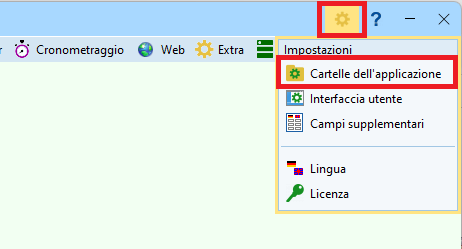 -
Imposta le cartelle e la configurazione standard di SportSoftware.
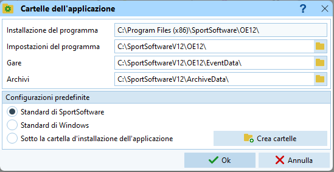 -
Conferma premendo
OK
Creazione gara¶
Segui le istruzioni a dipendenza della procedura scelta (normalmente per TMO, SprintCup e nazionali seleziona la prima opzione):
Creazione per utilizzo di OL-Events
-
Seleziona
Gara > Nuovo
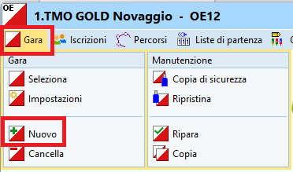 -
Seleziona
Gara singola
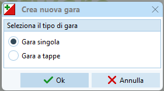 -
Riempi la scheda della nuova gara
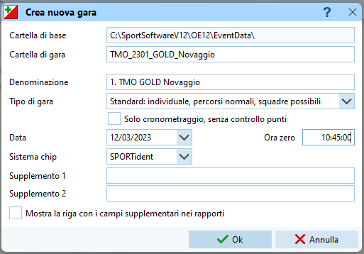-
La denominazione della gara è il testo che appare sulle stampe, ad esempio
1. TMO GOLD Novaggio -
Imposta la cartella di gara nel formato
TMO_AANN_SOCIETA_LUOGO_XX
dove
AAè l'anno a due cifre
NNè il numero della gara a due cifre
SOCIETAè la sigla della società
LUOGOè il posto della gara
_XXè un suffisso opzionale per gare speciali (ad es. _CTCO)Esempi: TMO_2301_GOLD_Novaggio per il primo TMO del 2023 a Novaggio organizzato dal GOLD TMO_2309_GOV_Cimalmotto_CTCO per i campionati ticinesi, nono TMO del 2023 organizzato dal GOV a CimalmottoPer gare speciali usa
GARA_AA, es.StaffettaSele_23per la gara del 2023.L'idea è di avere le gare ordinate cronologicamente almeno per tipo di gara.
-
Seleziona
Standardcome tipo di gara - Imposta la data e l'ora zero. Per l'ora zero imposta un orario anticipato di 15-30 minuti rispetto alle prime partenze, per permettere la partenza di alcuni concorrenti (es. collaboratori) prima dell'ora zero ufficiale.
- Seleziona
SPORTidentcome sistema chip.
Emitè un altro sistema non compatibile con i nostri chip e le nostre scatolette. - Imposta testi come "Trofeo Quadri" in
Supplemento 1eSupplemento 2e attiva la checkboxMostra la riga con i campi supplementari nei rapporti.
-
Creazione con gara modello
-
Seleziona
Gara > Copia.
Se il comando non è attivo, seleziona prima una gara a caso conGara > Seleziona
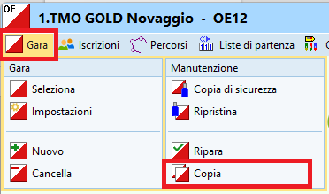 -
Riempi i campi come segue
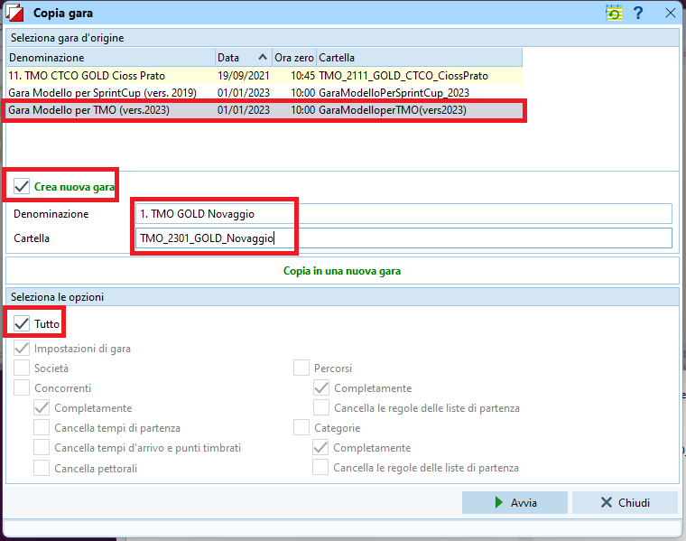-
Scegli
Gara modello per TMOoGara Modello per SprintCupcome gara d'origine. -
Imposta
Crea nuova gara -
La denominazione della gara è il testo che appare sulle stampe, ad esempio
1. TMO GOLD Novaggio -
Imposta la cartella seguendo le regole descritte sopra per le gare con OL-Events (formato
TMO_AANN_SOCIETA_LUOGO_XX) -
Seleziona
Tuttonelle opzioni -
Premi
Avvia,OKeChiudi
-
-
Controlla le impostazioni della gara in
Gara > Impostazioniseguendo le indicazioni descritte sopra nella sezione per le gare con OL-Events.
Creazione completamente manuale
Seguire le istruzioni in Utilizzo di OL-Events
Controllo del sistema chip¶
Per evitare continue richieste di verifica da parte del programma, controlla subito le impostazioni del sistema chip.
- Seleziona
Gara > Impostazioni - Clicca sul bottone
Sistema chip
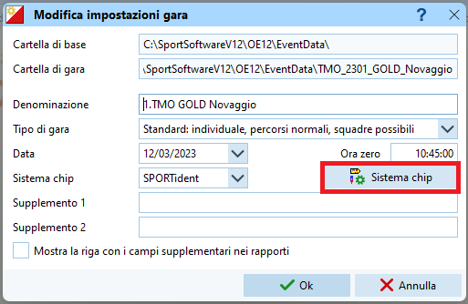 - Verifica le impostazioni di SPORTident.
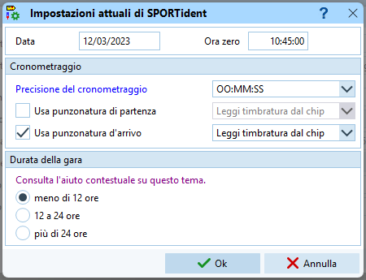- Verifica data e ora
- Imposta la precisione del cronometraggio a SECONDI
OO:MM:SS - Imposta l'uso della scatoletta all'arrivo ma non alla partenza.
- Imposta la modalità di lettura del tempo dal chip
- Seleziona una durata di gara inferiore alle 12 ore.
- Conferma con
OK
- Chiudi la finestra con
OK
Importazione categorie¶
Segui le istruzioni a dipendenza della procedura scelta (normalmente per TMO, SprintCup e nazionali seleziona la prima opzione):
Importazione categorie da OL-Events
Le categorie vengono importate da OL-Events.
Nota: è possibile eseguire questo passo più volte.
-
Recupera il Bearer Token da OL-Events
-
Accedi a ol-events come amministratore della gara
-
Nel menu a sinistra, sotto
organizzatoreselezionaLe mie gare -
Seleziona la tua gara
-
Nel menu
Gestione garaselezionaEsportazioni
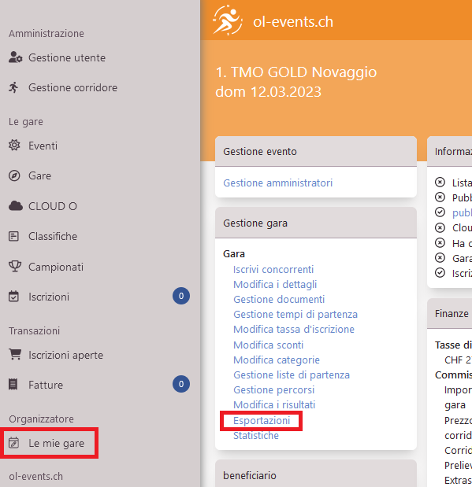 -
Dalla schermata
Scambio di daticopia il Bearer Token
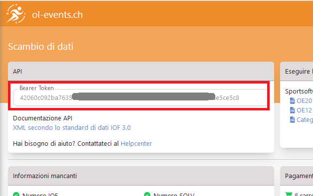
-
-
Connetti OE12 alla gara in OL-Events
-
Nella finestra principale di OE-12, seleziona
OL-Eventsnel menuWeb
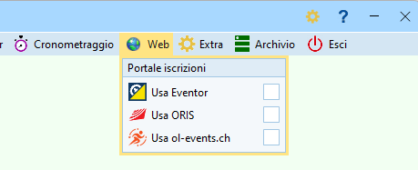 -
Nel menu specifico di OL-Events, seleziona
Impostazioni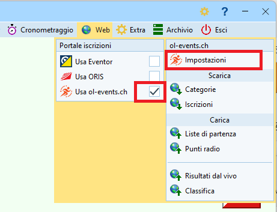 -
Incolla il Bearer Token di OL-Events nel campo
Tokene premi il bottoneCerca.
Appaiono le impostazioni della gara come definite in OL-Events. Attualmente queste informazioni sono di controllo per assicurarsi di aver collegato OE12 alla gara corretta in OL-Events, ma i dati non vengono ripresi da OE12.
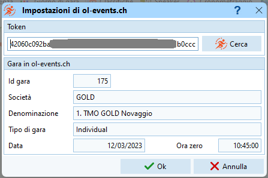
-
-
Importa le categorie da OL-Events
-
Nel menu
Web > OL-EventsselezionaScarica > Categorie
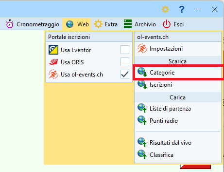 -
Verifica che la gara sia quella corretta e premi
Scarica
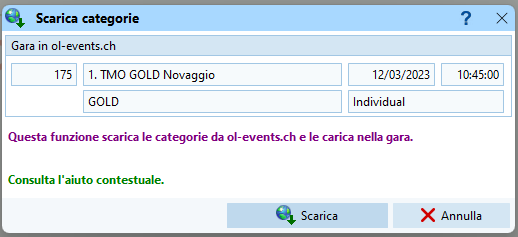 -
Conferma di scaricare le categorie
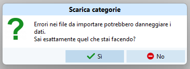 -
Verifica il numero di categorie e che non ci siano né errori né avvisi.
Nota: è normale che alcuni campi del file XML vengano ignorati.
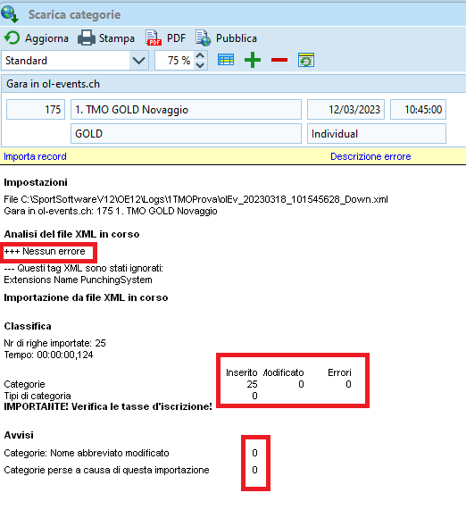 -
Chiudi la finestra di verifica.
-
-
Verifica le categorie
-
Nella finestra principale di OE12, nel menu
IscrizioniselezionaModifica > Iscrizioni

-
Seleziona il tab
Categoriee verifica i dati.
Nota: In OL-Events il nome lungo delle categorie è in tedesco. Questo non è un problema in quanto in OE12 usiamo unicamente la versione corta.
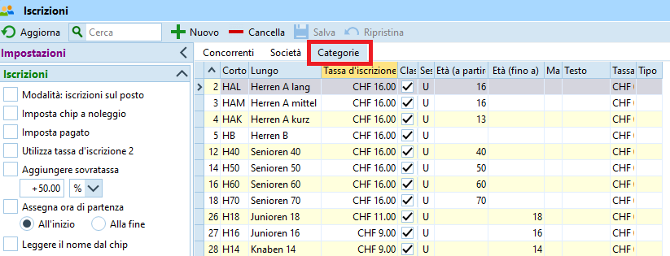
-
Importazione categorie da gara modello
Creando la gara dalla gara modello imposta già in automatico le categorie del tipo di gara selezionato (TMO o SprintCup)
Inserimento manuale delle categorie
Inserendo le categorie manualmente, assicurati di mantenere i nomi e le ID come definite dal SOLV e le tasse d'iscrizione come definite nel RECO.
-
Nella finestra principale di OE12, nel menu
IscrizioniselezionaModifica > Iscrizioni
-
Seleziona il tab
Categorie. -
Clicca il bottone
+ Nuovoe inserisci tutte le categorie.
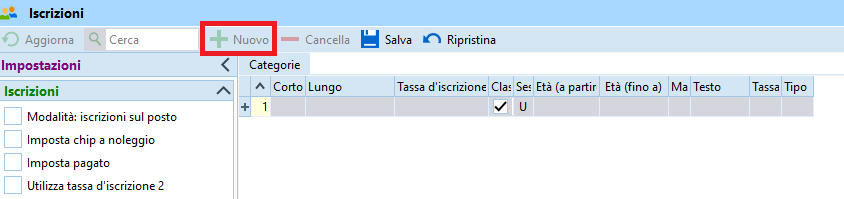- I campi
EtàeSessonon vengono usati. - Nota: per gare TMO mantieni il numero e la denominazione corta come definite dal SOLV e la tassa d'iscrizione come specificato nel RECO (vedi immagine).
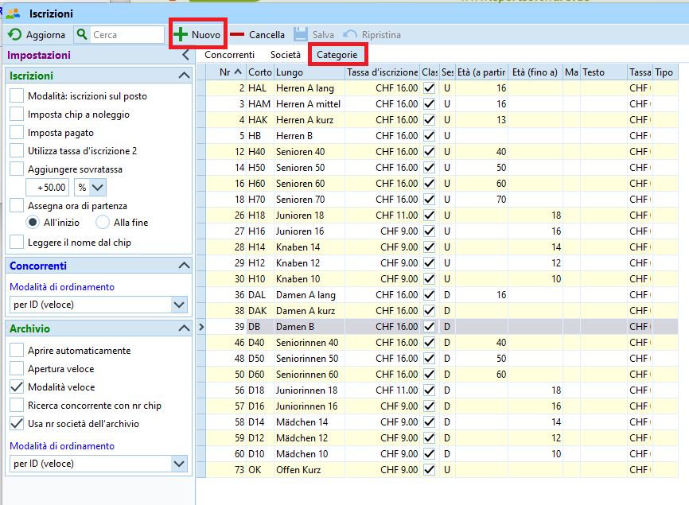
- I campi
Importazione iscrizioni¶
Segui le istruzioni a dipendenza della procedura scelta (normalmente per TMO, SprintCup e nazionali seleziona la prima opzione):
Importazione delle iscrizioni da OL-Events
Le iscrizioni vengono importate direttamente da OL-Events, senza esportazione/importazione di file.
Nota: è possibile eseguire questi passi più volte già prima della chiusura delle iscrizioni.
-
Si suppone che OE12 sia già connesso alla gara corretta in OL-Events come descritto sopra.
-
Nel menu
Web > OL-EventsselezionaScarica > Iscrizioni
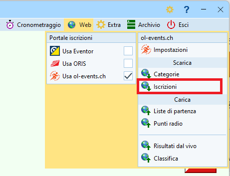 -
Verifica che la gara collegata sia quella corretta e imposta
Cancella e ricreaper i concorrenti e per le società.
Importa i blocchi di partenza ma non i tempi di partenza.
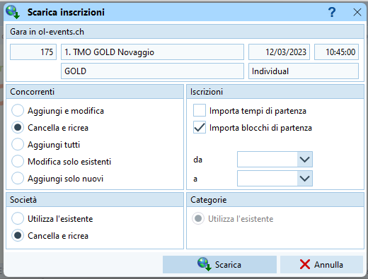 -
Conferma di scaricare le iscrizioni
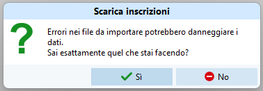 -
Verifica che non ci siano messaggi di errore.
Nota: è normale che alcuni campi del file XML vengano ignorati.

-
Verifica le iscrizioni nel tab
ConcorrentiselezionandoModifica > Iscrizioninel menuIscrizioni.
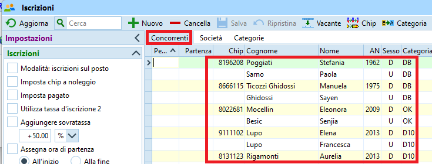
Importazione con file CSV/XML
OE12 permette sempre ancora di importare le iscrizioni utilizzando dei file CSV o XML.
Nota: è possibile eseguire questi passi più volte già prima della chiusura delle iscrizioni.
-
I passi per ottenere il file di importazione con tutte le iscrizioni dipende dal portale d'iscrizione utilizzato.
Per OL-Events:-
Accedi a ol-events come amministratore della gara
-
Nel menu a sinistra, sotto
organizzatoreselezionaLe mie gare -
Seleziona la tua gara
-
Nel menu
Gestione garaselezionaEsportazioni
-
Dalla schermata
Scambio di datiselezionaOE12nella sezioneSportsoftware
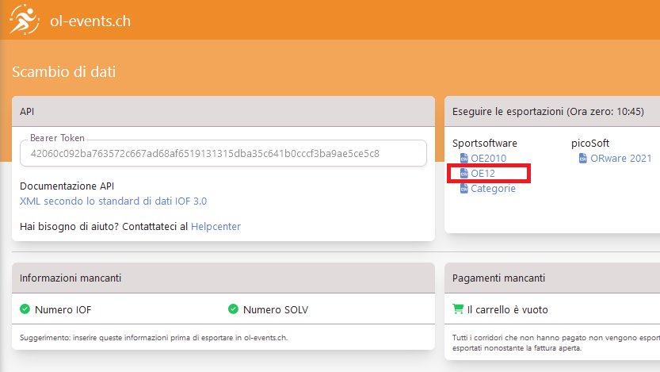
-
-
Nel menu
IscrizioniselezionaImporta > Iscrizioni
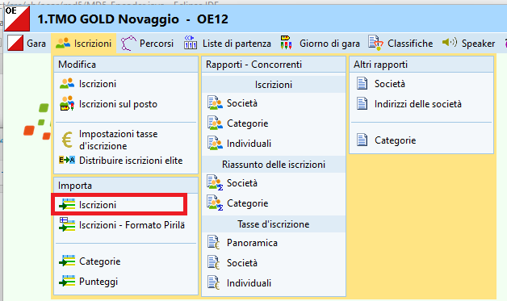 -
Imposta i valori
Cancella e ricreai concorrenti- Identifica i concorrenti tramite l'
ID della banca dati - Ignora le impostazioni per le iscrizioni tardive
Cancella e ricreale società-
Imposta il formato del file esportato dal portale delle iscrizioni.
Per OL-Events impostaCSVcome formato del filePunto e virgolacome separatore- I doppi apici come delimitatore di testo
-
Seleziona il file esportato dal portale delle iscrizioni
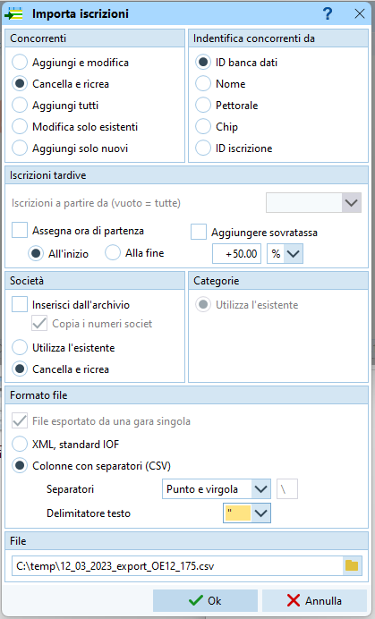
-
Conferma il caricamento delle iscrizioni
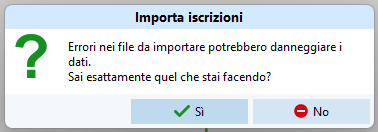 -
Verifica che abbia importato concorrenti e che non ci siano errori.
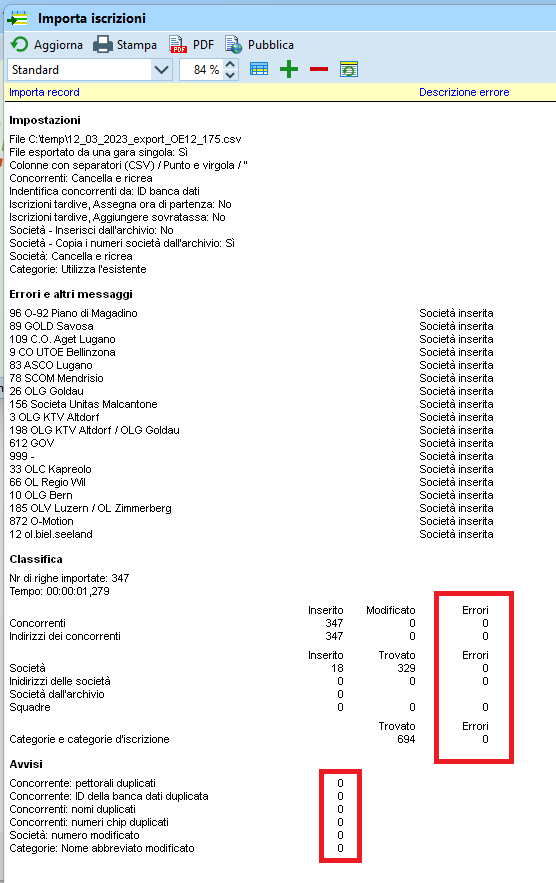 -
Verifica le iscrizioni nel tab
ConcorrentiselezionandoModifica > Iscrizioninel menuIscrizioni.
Inserimento manuale dei concorrenti
da fare
Gestione coppie/gruppi¶
OE12 ha introdotto il concetto di squadre per gestire coppie o gruppi di concorrenti che corrono insieme. OL-Events esporta i dati (sia via API che via file CSV) nel nuovo formato di OE12.
Secondo il RECO è possibile correre in coppia nelle categorie H/D 10-12-14, H/DB e in OK, ma deve essere ben visibile sulle liste di partenza e sulle classifiche chi ha corso in coppia, in quanto questi concorrenti non ricevono punti per la classifica annuale del TMO.
In OE12 ogni concorrente è presente con una riga dedicata. Un campo supplementare contiene il nome della squadra che "collega" i concorrenti che corrono insieme. I sistemi attuali non soddisfano i criteri definiti dal RECO in quanto sulle liste di partenza e classifiche apparirebbe unicamente il primo concorrente della squadra.
Per i TMO continuiamo quindi ad usare il formato dei nomi e cognomi uniti da un + nello stesso campo.
- Apri la lista degli iscritti selezionando
Modifica > Iscrizioninel menuIscrizioni - Nel tab
Concorrentiordina la tabella perSquadra
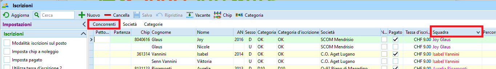 - Identifica il concorrente principale (quello con tutti i dati: numero chip, ID banca dati, ecc.)
- Aggiungi nome e cognome del/dei compagno/i nei campi
NomeeCognomedel concorrente principale 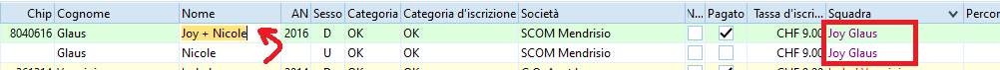 - Cancella la riga del compagno: seleziona la riga e premi su
- Cancella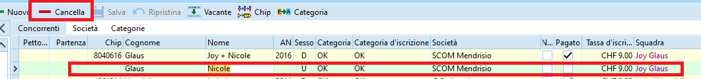 - Cancella il campo
Squadradel concorrente principale. 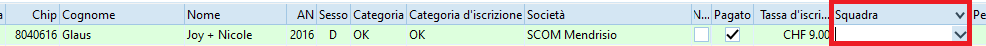
Gestione desideri di partenza¶
OL-Einzel prevede un campo blocco con cui gestire i desideri di partenza.
Questo campo viene usato durante il sorteggio delle liste di partenza, facendo partire i concorrenti in ordine ascendente rispetto al valore in questo campo (quindi i concorrenti con valori più bassi partono prima di quelli con valori alti).
Nota: secondo il RECO non è permesso esprimere desideri di partenza nei campionati ticinesi e nei campionati svizzeri.
OL-Events imposta per ogni concorrente un valore secondo i desideri espressi dal concorrente durante l'iscrizione, oppure (per gare nazionali) tenendo conto della provenienza dei concorrenti.
Vengono utilizzati i seguenti valori:
- 1 = a disposizione per i collaboratori che partono per primi
- 2 = desiderio di partenza presto
- 5 = per le gare TMO e SprintCup, tutti i concorrenti senza desideri di partenza sono nel blocco 5.
- 3, 5, 7 = per le gare nazionali, primo, secondo e terzo blocco secondo le regioni SOLV
- 8 = desiderio di partenza tardi
- 9 = a disposizione per i collaboratori che partono per ultimi
I collaboratori molto probabilmente non hanno espresso il proprio desiderio sul portale d'iscrizione, per cui in OE12 imposta manualmente il campo blocco soprattutto per i collaboratori che devono partire per primi o per ultimi.
- Apri la lista degli iscritti selezionando
Modifica > Iscrizioninel menuIscrizioni - Apri il tab
Concorrenti - Cerca il concorrente
- Imposta il campo blocco a uno dei valori indicati sopra
- Salva
Importazione percorsi¶
Importare i percorsi in OE12 usando un file XML esportato da OCAD.
-
Esporta i percorsi da OCAD
- In OCAD seleziona
Tracciati (XML, IOF Versione 3.0)dal menuTracciamento percorsi > Esporta
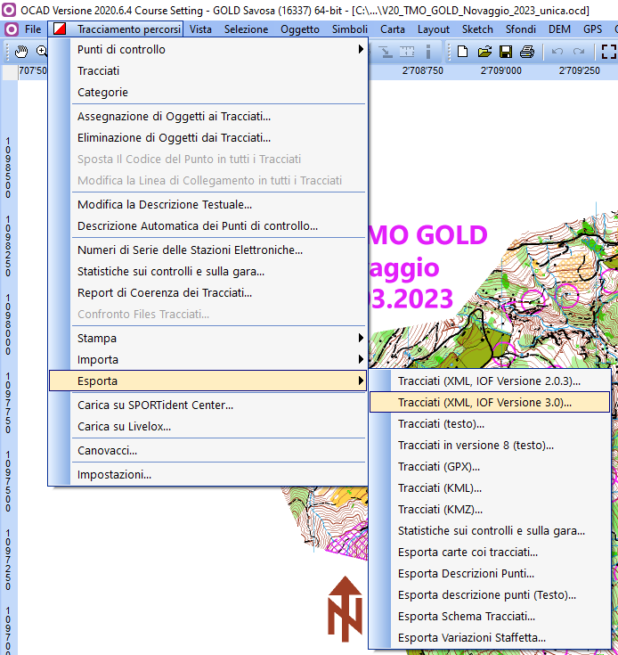
- In OCAD seleziona
-
Importa i percorsi in OE12
-
In OE12 nel menu
PercorsiselezionaImporta > Percorsi
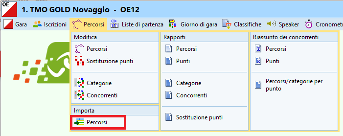 -
Imposta i valori
Cancella e ricreai percorsi- Identifica i percorsi dalla
denominazione Cancella e ricreai punti- Imposta il formato del file a
XML - Seleziona il file esportato da OCAD
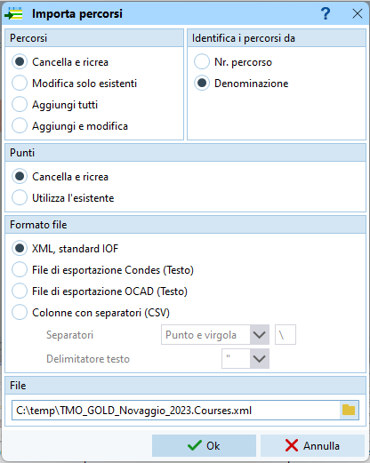
-
Conferma la cancellazione degli abbinamenti tra percorsi e categorie
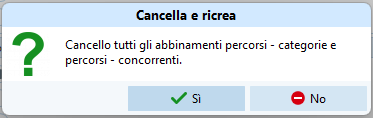 -
Conferma il caricamento dei percorsi
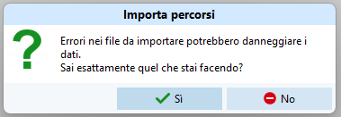 -
Verifica che abbia importato i percorsi e che non ci siano errori.
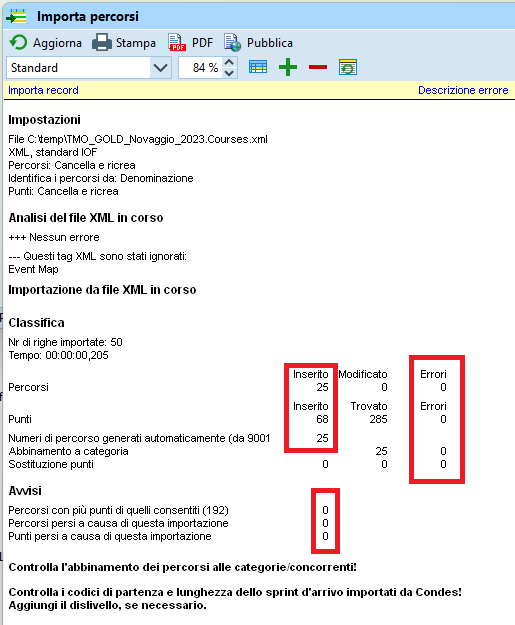
-
-
Verifica gli abbinamenti tra percorsi e categorie
-
Nel menu
PercorsiselezioneModifica > Categorie
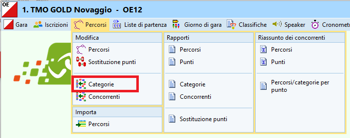 -
Verifica ed eventualmente imposta il percorso abbinato ad ogni categoria
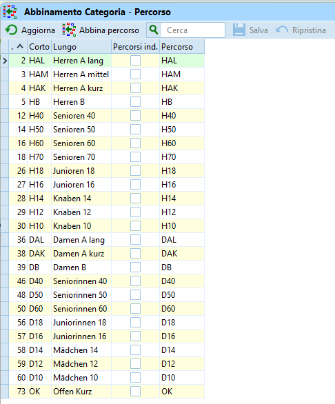
-
Controllo frequenza ai punti¶
Ora che tutti i concorrenti sono inseriti, e se non è già stato fatto questo lavoro in OCAD, controlla le percorrenze ai punti. Questo rapporto mostra per ogni punto il numero di concorrenti totali e quanti lo hanno come primo punto:
- Nel menu
PercorsiselezionaRiassunto dei concorrent > Punti
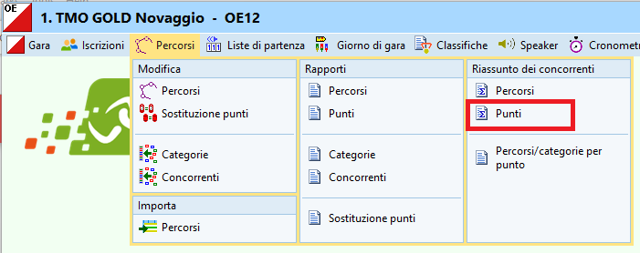